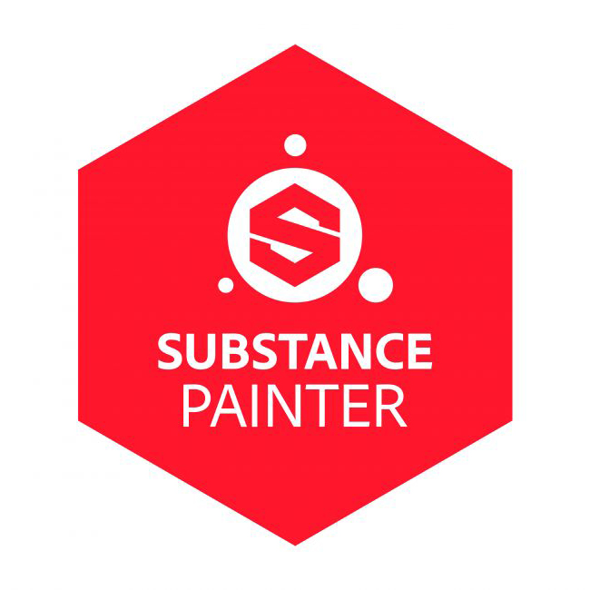

My Skills
-

To create designs that align with the layout plans I've created using AutoCAD and meet the client's expectations in interior design projects, I have been using 3ds Max with enthusiasm for many years. Starting the design process with 3ds Max, I utilize this software for almost the entirety of my modeling work.
-
I use the outstanding Corona Renderer to generate renders for the interior projects I create with 3ds Max. While I also have experience with other render engines like Vray and Arnold, my personal favorite has always been Corona Renderer.
-
Besides interior design, one of my greatest pleasures is indulging in digital sculpting. ZBrush has been my trusted companion in this artistic journey, and we get along famously.
-

I use Substance Painter to texture the models I create in ZBrush. I've recently started improving my texturing skills, and I seize the opportunity to learn something new every day.